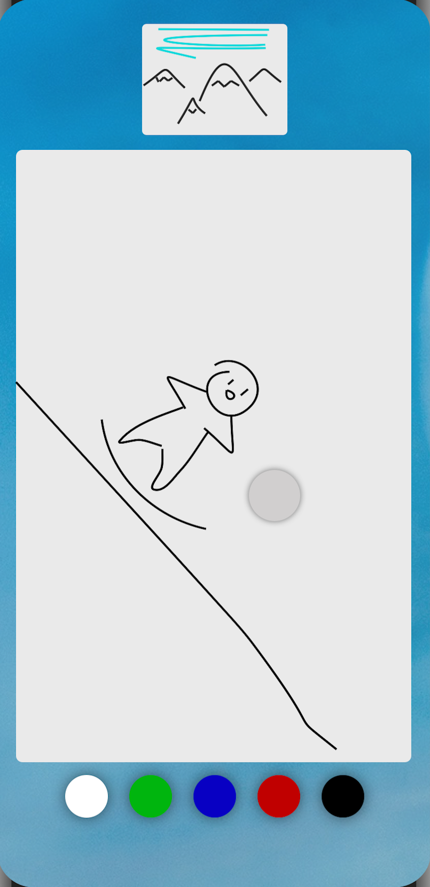
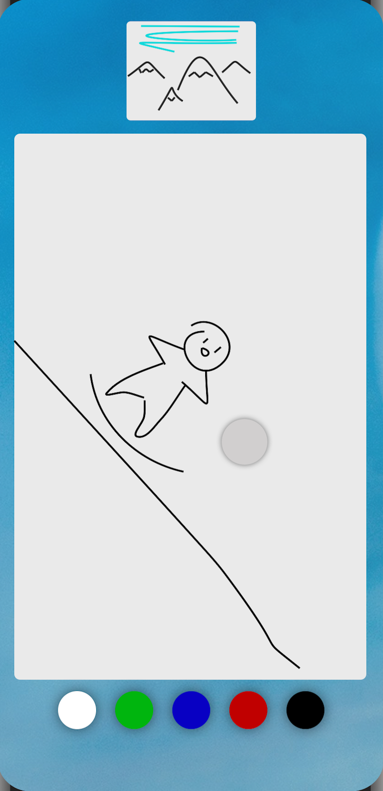

Project Length: 3 weeks
Tools: Sketch, Android Studio, Node.js
ComicRoulette is a mobile application that utilizes crowdsourcing to help users create unique, ever-changing comic strips. Each comic in ComicRoulette is created by multiple artists: one for each panel in the comic. Additionally, each artist only has the context of the previous panel when contributing to the comic. These constraints bring together complete strangers to unfold dynamic stories, leading to nothing less than amusing outcomes.
 

Motivation
At the heart of many compelling stories, jokes, and games is the mechanic of the unexpected twist. When an audience has an expectations for the way a story will unfold, the author has the opportunity to catch them off guard, adding to the story’s entertainment. In this project, I wanted to explore the ways in which individuals could both contribute to a story, yet still be caught off-guard as it unfolds.
User Flow
The comic a user contributes to is chosen by random accompanied by a roulette-style mechanic. The image that the roulette wheel lands on is the only context of the comic that the user is allowed to see while contributing their own panel to the strip. Once the user has completed the next panel of the story, they are able to see the comic in its entirety before it is released back to the wheel to find the next artist to continue the story.
While I’ve designed a login page for ComicRoulette, the type of crowdsourcing and collaboration doesn’t necessarily require an account. Comics are stored in a centralized database, retrieved when a user’s roulette lands on it, and then is appended and restored in the database. However, accounts could be useful for tracking previous, completed comics.